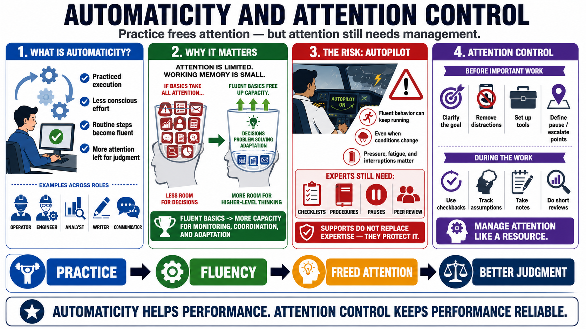

Automaticity and Attention Control
Connecting to LMS... Progress: in progress

Narration
Automaticity is practiced execution with reduced conscious effort. It allows routine components of a task to run smoothly so the performer can reserve attention for judgment, monitoring, and adaptation. A skilled operator, engineer, analyst, writer, or communicator may perform common steps fluently because those steps have been practiced many times with feedback.
Automaticity is powerful because attention is limited. Working memory can only hold and process a small amount at once. If every basic step consumes full attention, there is little capacity left for higher-level decisions. When routine components become efficient, the performer can notice exceptions, coordinate with others, and think about the larger situation.
The risk is autopilot. Fluent behavior can continue even when the situation has changed. In high-risk work, experts still need checklists, procedures, deliberate pauses, and peer review because memory and attention can fail under pressure, fatigue, or interruption. These supports do not replace expertise. They protect expertise from predictable human limits.
Attention control includes focus routines and interruption management. Before important work, a performer may clarify the goal, remove avoidable distractions, set up required tools, and define when to pause or escalate. During the work, they may use checkbacks, notes, or short reviews to keep track of assumptions. The point is to make attention a managed resource rather than hoping it will remain stable by itself.